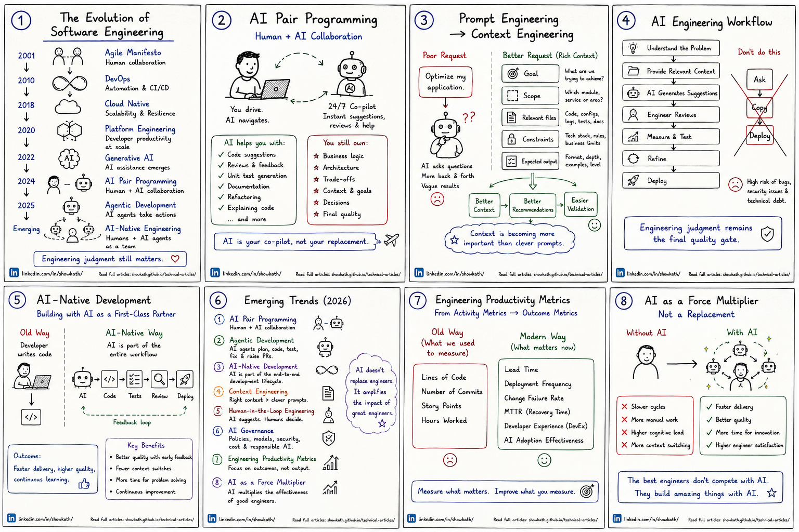
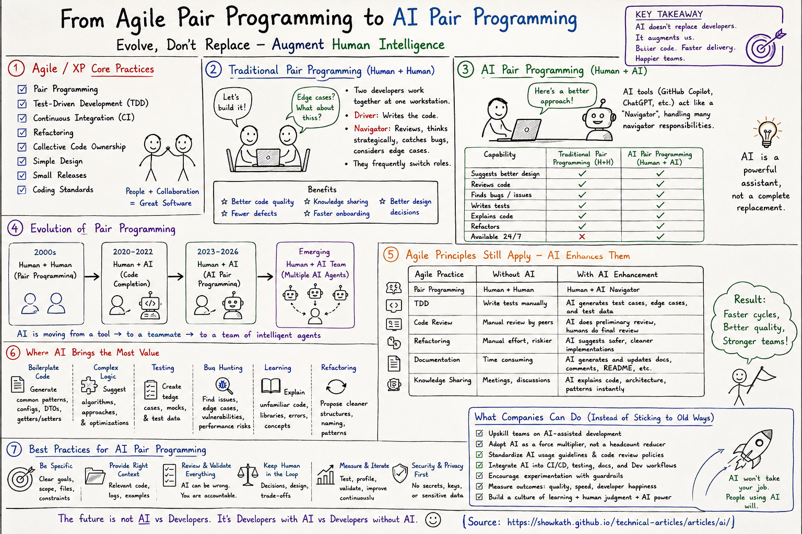
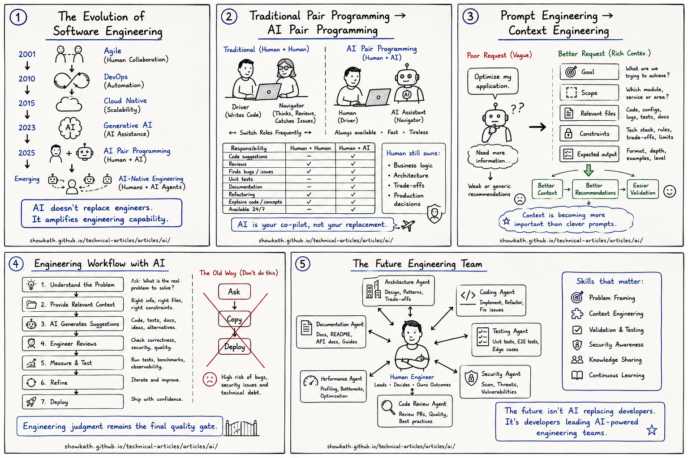

The Evolution of Software Engineering: From Agile to AI-Native Engineering
Software engineering has moved through Agile, DevOps, Cloud Native, and Platform Engineering. The next shift is AI-assisted and AI-native development—but engineering judgment remains the foundation.
Visual Guide
This guide summarizes a practical transition: engineering teams are not moving from human expertise to artificial intelligence. They are moving from manual-only workflows to AI-augmented workflows where human judgment becomes even more important.

How Software Engineering Has Evolved
Each era changed how teams think about delivery, ownership, architecture, and feedback loops.
| Era | Main question | What improved | New responsibility |
|---|---|---|---|
| Agile | How do we deliver value incrementally? | Shorter feedback cycles and better collaboration with stakeholders. | Keep priorities clear and avoid confusing motion with value. |
| DevOps | How do we ship and operate reliably? | Automation, CI/CD, observability, and shared accountability. | Treat operational quality as part of engineering, not an afterthought. |
| Cloud Native | How do we build systems that scale and recover? | Containers, managed services, elastic infrastructure, and resilient patterns. | Manage distributed complexity, cost, security, and reliability. |
| Platform Engineering | How do we make the paved road easier? | Reusable golden paths, self-service environments, and better developer experience. | Balance standardization with team autonomy. |
| AI-Native Engineering | How do we design engineering work for human-AI collaboration? | Faster understanding, code generation, testing, reviews, and modernization support. | Provide context, validate recommendations, and keep humans accountable for decisions. |
Engineering Judgment Still Matters
AI can generate code, explain complex systems, write tests, review pull requests, and help refactor applications. But great software is not built by prompts alone.
Define the problem clearly
AI performs better when engineers describe the business goal, expected behavior, constraints, and success criteria. A vague request often produces a vague solution.
Provide the right context
Relevant architecture notes, code paths, APIs, data contracts, logs, and examples matter more than clever wording. Context turns a prompt into an engineering task.
Validate recommendations
AI output should be reviewed through tests, code review, security checks, observability, and domain knowledge before it reaches production.
Understand trade-offs
Performance, maintainability, cost, reliability, compliance, and team skill all shape the right solution. AI can suggest options; engineers make the decision.
The next generation of developers will not be measured only by how well they write code. They will also be measured by how effectively they collaborate with AI.
From Pair Programming to AI Pair Programming
Traditional pair programming improved quality by combining two human perspectives in real time. AI pair programming changes the dynamic: one engineer can ask for explanations, alternatives, edge cases, tests, refactoring suggestions, or review feedback on demand.

Where AI helps
Code explanation, boilerplate generation, unit test ideas, API usage examples, migration planning, code review checklists, and documentation drafts.
Where humans lead
Problem framing, architecture choices, security posture, business rules, data ownership, production readiness, and accountability for shipped software.
From Prompt Engineering to Context Engineering
One of the most important shifts is moving from clever prompts to useful context. Success increasingly depends on giving AI the right business, architecture, technical, and operational information.

Prompt engineering
Focuses on how the question is phrased: role, task, style, format, and examples.
Context engineering
Focuses on what the AI needs to know: relevant files, system boundaries, contracts, constraints, logs, risks, and expected validation.
AI-native engineering
Designs team workflows so AI support is built into analysis, coding, testing, review, documentation, and modernization.
Responsible adoption
Creates guardrails for security, privacy, compliance, accuracy, cost, and human accountability.
What This Means for Engineering Teams
AI-assisted development is not just a tooling change. It changes how teams learn systems, review changes, document decisions, and scale engineering knowledge.
| Team habit | AI-assisted version | Why it matters |
|---|---|---|
| Backlog refinement | Use AI to clarify acceptance criteria, edge cases, dependencies, and test scenarios. | Improves task quality before coding starts. |
| Architecture review | Ask AI to compare options, identify risks, and produce review questions—not final decisions. | Speeds preparation while preserving human accountability. |
| Pull request review | Use AI for initial checks around tests, error handling, readability, and security smells. | Frees reviewers to focus on design, correctness, and domain impact. |
| Incident learning | Summarize logs, timelines, and likely contributing factors with human verification. | Accelerates learning while avoiding unsupported conclusions. |
Closing Thought
The future is not developers versus AI. It is developers, architects, technical leads, and engineering organizations learning how to engineer effectively with AI.
AI-native engineering will reward teams that ask better questions, provide better context, validate more rigorously, and keep engineering judgment at the center of delivery.